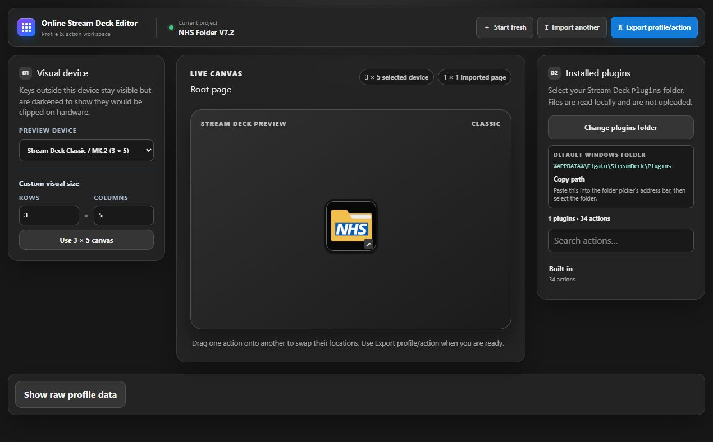

01 / Browser application
Online Stream Deck Editor
Opens, previews, edits, and exports Stream Deck profiles without requiring a physical device. The editor handles archive extraction, nested folders, device grid sizes, plugin actions, images, and local workspace persistence entirely in the browser.